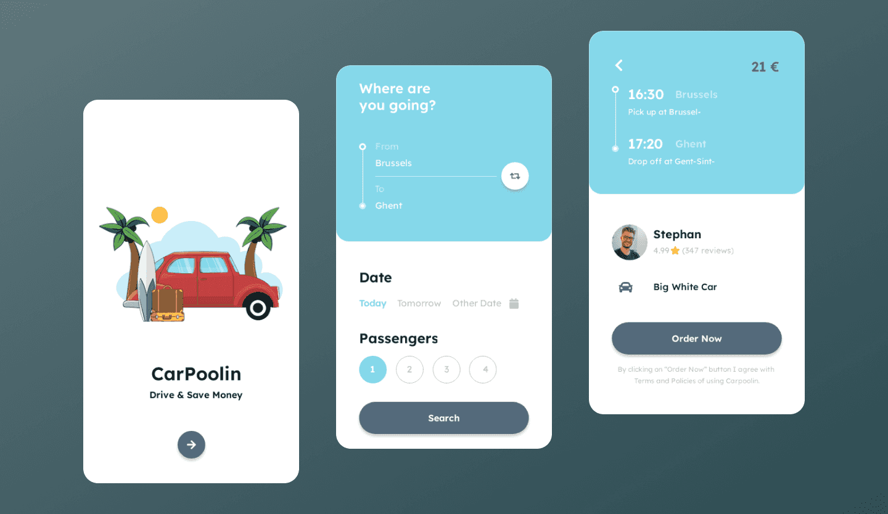

Good design doesn’t just look appealing—it supports the way users think, act, and remember. Interfaces aren’t just tools; they are cognitive environments that either help or hinder users in completing tasks efficiently. With increasing complexity in digital systems, understanding the relationship between human cognition and interface design is crucial. This blog post will explore how memory, mental models, feedback, and consistency contribute to usability, and how poor designs can impose unnecessary cognitive load.
Mental Models and Memory
When users interact with an interface, they rely on what are known as mental models—internal representations of how they believe a system should work. These models are formed from prior experiences with other systems and inform expectations. For example, when using a new email client, users expect to find a 'compose' button somewhere at the top left or right, because that’s where it is in Gmail, Outlook, and Yahoo. Breaking from this expectation confuses users.
Memory also plays a vital role. According to George Miller’s law, our working memory can only retain about 7±2 items at once. Designers must therefore avoid interfaces that require users to remember information across multiple steps. In Designing with the Mind in Mind, Johnson (2020) highlights how recognition-based interfaces outperform recall-based ones. Recognizing icons, options, or paths significantly lowers mental strain compared to remembering exact commands or steps.
Amazon’s 1-click ordering exemplifies this principle. Once users associate the button with a successful transaction, they mentally model that action as trustworthy. No lengthy forms or repeated confirmations are required—just a single, predictable action. This reduces memory burden and streamlines the decision-making process.

Consistency and Feedback
One of the most effective ways to reduce cognitive load is through consistency. Jakob’s Law, discussed in The Laws of UX (Babich, 2019), states that users prefer your site to function like other familiar platforms. When layouts, colors, or labels change arbitrarily, users are forced to relearn patterns, increasing the likelihood of errors and abandonment.
Feedback, on the other hand, provides immediate reassurance. Systems that respond to user actions—through animations, messages, or sound—help users feel in control. Consider Google Docs: when you type, a “Saving…” message appears, followed by “All changes saved.” This micro-interaction prevents user anxiety about data loss and improves overall satisfaction.
Compare that to a multi-step web form that, upon pressing "Submit", erases all data and provides no error message if something was filled incorrectly. Users feel frustrated, not only because their time was wasted, but because the system failed to communicate.
Recognition vs. Recall
Another foundational cognitive principle in UX is the distinction between recognition and recall. Recognition is passive and triggered by external cues, whereas recall requires active memory retrieval. Interfaces should rely more on the former.
Consider the difference between typing a command into a terminal versus clicking an icon on a GUI. The latter is more user-friendly for the average person. Spotify, for example, uses clearly labeled icons and playlist thumbnails. If users had to recall exact artist names or song titles without suggestions or images, the app would be far less usable.
Well-designed interfaces also offer visual continuity. Netflix, for instance, displays previously watched episodes, recommendations, and progress bars. Users are guided through their experience based on what they see—not what they have to remember.
Cognitive Load and Tesler’s Law
Cognitive load is the mental effort required to use a system. Designs that reduce unnecessary choices or ambiguity are more effective. Tesler’s Law tells us that "every application has an inherent amount of complexity. The job of the designer is to manage it."
Unfortunately, many systems shift this complexity onto users. Airline booking forms often ask for seating preferences, fare class, loyalty numbers, and insurance details—before showing available flights. This overloads users at the wrong time. A better approach would sequence these steps and reduce the visible fields at each stage, like what Hopper or Skyscanner do.
Duolingo illustrates good practice by letting learners make one choice at a time. Each lesson builds on past lessons, reinforcing learning without overwhelming. The interface uses bright icons, progress indicators, and encouraging messages. These combine to reduce mental strain while reinforcing motivation.
Good Design in Practice
The CarPoolin app interface below is a model of minimal cognitive load. First, the home screen uses friendly imagery that immediately communicates its purpose: travel and savings. Next, users are guided step-by-step—from selecting destination, date, to passenger count. Each action is visual, intuitive, and consistent with mobile norms.

This design aligns perfectly with users’ mental models of ride-sharing and travel booking apps. It avoids redundant fields, reduces the need for typing, and provides immediate feedback through button states and confirmations. More importantly, it respects the user's time and attention—two of the most valuable digital currencies today.
Compare this to a cluttered interface with dropdowns hidden under tabs, unclear icons, and no error recovery. Every misstep costs attention and patience. A well-designed interface is silent—it simply works.
Case Study: Poor Design and High Cognitive Load
Consider the user experience of an older tax filing system used in many countries before modernization efforts. The interface was filled with jargon, no tooltips, no inline validation, and mandatory multi-page forms that didn’t save progress. Users were expected to calculate deductions manually, understand legal tax language, and format values precisely to avoid rejection.
This system not only violated best practices but ignored Tesler’s Law entirely. Complexity was dumped onto the user. The resulting experience was one of anxiety, confusion, and frequent errors. Redesigns of these systems now include guided flows, help text, autocomplete, and live chat support—features that recognize user limitations and ease mental effort.
Designing for Accessibility and Cognitive Differences
Designing with cognition in mind is especially vital for users with ADHD, dyslexia, or age-related cognitive decline. A design that minimizes distractions, uses predictable layouts, and offers progressive disclosure (showing information as needed) can dramatically improve usability for these groups.
For example, Apple's iOS “Focus” mode and interface simplifications benefit not only neurodivergent users but everyone. Similarly, readable fonts, ample spacing, and avoidance of scrolling text improve comprehension. These aren’t just ethical considerations—they enhance performance and satisfaction across all user types.
Inclusive design respects the diversity of human cognition and acknowledges that everyone benefits when systems are clear, predictable, and accommodating. As Norman (2013) argued, design should be for how people actually behave—not how we wish they behaved.
Future Directions: Cognitive Design in the Age of AI
As artificial intelligence becomes increasingly embedded in everyday interfaces—from voice assistants to recommendation engines—understanding user cognition is more important than ever. Systems now adapt to users in real time, but poor cognitive alignment can lead to confusion and loss of trust.
Consider AI chatbots: if their responses lack transparency or fail to reflect users' mental models of a helpful assistant, users may abandon them quickly. Similarly, algorithmic recommendation systems (like those on YouTube or Netflix) need to strike a balance between novelty and familiarity. Too much change disrupts consistency; too little feels stale.
Emerging trends in UX include adaptive interfaces, context-aware simplification, and emotion-sensing feedback loops. These aim to align system behavior even more closely with how humans perceive, decide, and remember. But the fundamentals remain the same—respect memory limits, reduce load, and build around real mental models.
Conclusion
Design is not just about aesthetics—it's about empathy. It’s about knowing that your user is a human with limited time, limited memory, and a desire for clarity. By embracing cognitive principles like recognition over recall, consistent structure, immediate feedback, and minimizing unnecessary load, designers can create systems that feel intuitive and delightful.
Tesler’s Law reminds us: complexity exists, but it’s our job to manage it—not pass it on to the user. From tax systems to mobile apps, and from accessibility to AI, design should meet users where they are—supporting, guiding, and never overwhelming. Cognitive-based design is not just smart UX—it’s human-centered thinking at its best.